Web je již jen v režimu pro čtení a není možné přidávat nové komentáře nebo dotazy do fóra. Díky za přízeň.
Main menu
You are here
Tapeta se srdíčkem
21. December 2010 - 14:05 — Lukáš
Co budeme potřebovat?
Začínáme
Vytvoříme nový obrázek s rozměry 1600×1200 a vyplníme jej červenou barvou #8f001a. Vytvoříme novou vrstvu, nazveme ji „pozadi 1“. Vyplníme ji barvou #a80057. Ve spodní části obrázku vytvoříme kruh. Pokud chcete mít naprosto stejný výsledek jako já, velikost kruhu bude 950×580px a poloha 120 na 515.
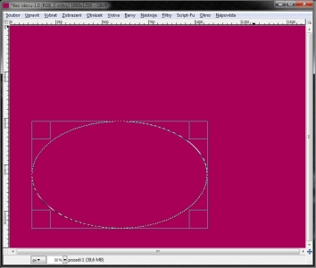
{kind=link}
Klepneme na Vybrat › Zaoblení hodnotu nastavíme na 300px, potvrdíme a stiskneme Delete. Znovu klepneme na menu Vybrat a zvolíme Nic.
Vytvoříme novou vrstvu, nazveme ji „pozadi 2“, vyplníme ji barvou #5d003d. Vytvoříme novou kružnici s rozměry 1560×1130px a polohou 29 na 35.
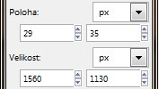
{kind=link}
Přejdeme na Vybrat › Zaoblení a nastavíme na 350px. Stiskneme Delete. Znovu přejdeme na menu Vybrat a zvolíme Nic. Dostaneme toto:
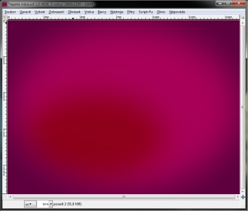
{kind=link}
Vytvoříme novou vrstvu s názvem „záře“ Vybereme nástroj štětec. Stopy si zobrazíme jako seznam.
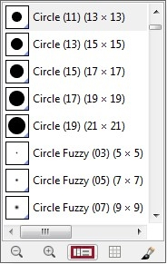
{kind=link}
Vybrtrme stopu „Ray_Brushes_Set_1_by_xCassiex24.abr-009“ škálu nastavíme na 0,75. Barvu popředí si natavíme na bílou a vyplníme stopou obrázek.
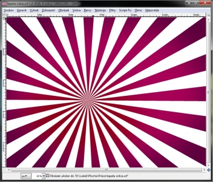
{kind=link}
Krytí vrstvy „záře“ nastavíme na 25%. Duplikujeme vrstvu „záře“, vznikne nám tedy vrstva s názvem „záře kopie“. Klepneme na ni a nastavíme jí krytí na 50%. Klepneme pravým tlačítkem na vrstvu „zare kopie“ a na „alfa do výběru“. Přejdeme na menu Vybrat › Zmenšit hodnotu nastavíme na 1px. Stiskneme klávesu Delete, poté klikneme na Vybrat › Nic.
Vrstvu „pozadi 2“ přesuneme úplně nahoru, abychom dostali toto:
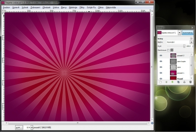
{kind=link}
Vytvoříme novou vrstvu s názvem „Srdce“. Barvu popředí nastavíme na černou. Pokud nemáme, zvolíme nástroj Štětec a vybereme stopu „heart.abr-009“. Škálu nastavíme na 2.00. Srdce umístíme nějak takto:
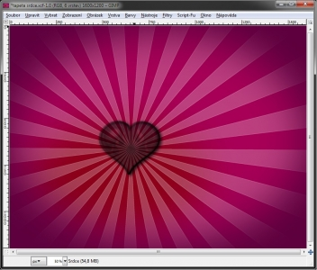
{kind=link}
Vytvoříme novou vrstvu, nazveme ji „efekt 1“. Vybereme si stopu „Attack_Brushes_by_rubina119.abr-005“. Škálu nastavíme na 1.10, barvu popředí na bílou a stopu umístíme nad srdce. Vrstvu „efekt 1“ umístíme pod vrstvu „Srdce“ a nastavíme jí režim „Sloučení zrnitosti“.
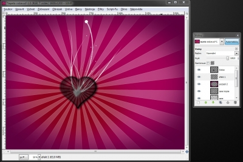
{kind=link}
Vytvoříme novou vrstvu s názvem „efekt 2“. Vybereme stopu „Attack_Brushes_by_rubina119.abr-006“ Škálu nastavíme na 0,8 a krytí vrstvy na 45%. Zkontrolujeme, zda je vrstva „efekt 2“ pod vrstvou „Srdce“ a nad vrstvou „efekt 1“. Štětcem klepneme do srdíčka tak, abychom dostali toto:
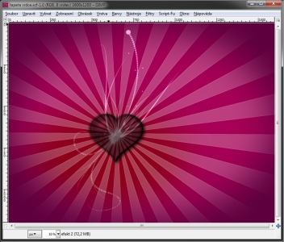
{kind=link}
Vytvoříme novou vrstvu „efekt 3“, zkontrolujeme, že je umístěná pod vrstvou „Srdce“. Vybereme stopu „freshemedia_28abstractcurves.abr-019“ škálu nastavíme na 1.00. Čáru umístíme na pravou stranu srdce. „Abstract_Brushes_Vol_5_by_rubina119.abr-002“ se škálou 0.55 umístíme vlevo. Vrstvě „efekt 3“ nastavíme krytí na 50%.
Náš obrázek by nyní měl vypadat takto:
{kind=link}
Vytvoříme novou vrstvu s názvem „odlesk“, bude umístěna pod vrstvou „srdce“. (máme aktivní vrstvu odlesk) Do srdce umístíme kružnici s rozměry 230×230px.
{kind=link}
Kruh vyplníme bílou barvou, přejdeme na Vybrat › Nic a na Filtry › Rozostření › Gaussovské rozostření obě hodnoty nastavíme na 300. Kolem srdce vznikne pěkná záře, pro zvýšení intenzity záře duplikujeme vrstvu „odlesk“
Vytvoříme novou vrstvu „hvězdy“.(pod vrstvou „srdce“) Zvolíme stopu „LadyVictoire_Stars_4.abr-003“ se škálou 1.00 a vyplníme s ní vrstvu.
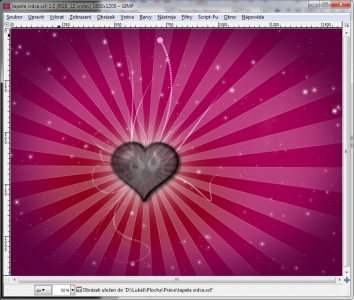
{kind=link}
Přejdeme na Barvy › Křivky. Přepneme se na kanál Alfa, který nastavíme takto:
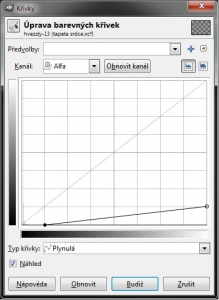
{kind=link}
Vytvoříme novou vrstvu „hvězdy 1“. Znovu vyplníme vrstvu stopou „LadyVictoire_Stars_4.abr-003“ se škálou 1.00 a opět přejdeme na Barvy › Křivky. Přepneme se na kanál Alfa, který nastavíme takto:
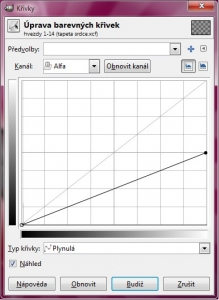
{kind=link}
Písmem Sans Bold velikosti 60px napíšeme „Love“ a nástrojem perspektiva jej takto deformujeme:
{kind=link}
Na vrstvu „Love“ klepneme Pravým tlačítkem a zvolíme „Velikost vrstvy dle obrázku“, znovu na vrstvu klepneme pravým tlačítkem a zvolíme „Alfa do výběru“. Přejdeme na Filtry › Šum › HSV Šum a nastavíme takto:
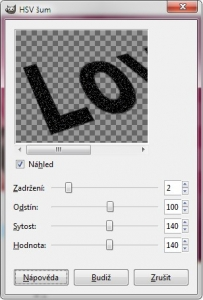
{kind=link}
Klepneme na Vybrat › Nic. Filtr aplikujeme ještě 3×. (3× zmáčkneme CTRL + F). Přejdeme na Barvy › Barva do Alfy, zde nastavíme černou barvu (#000000). Režim vrstvy „Love“ nastavíme na sloučení zrnitosti a krytí nastavíme na 40%.
Skryjeme vrstvu srdce a vrstvu pozadí. Na vrstvu pozadí klepneme pravým tlačítkem a zvolíme „Sloučit viditelné vrstvy“. Ve volbách zaškrtneme „Oříznout dle obrázku“. Skryté vrstvy si znovu zobrazíme.
Klepneme na vrstvu „Srdce“ pravým tlačítkem a zvolíme „Alfa do výběru“. Fleky uvnitř srdce obkroužíme volným výběrem, nezapomeneme nastavit režim na „Ubrat z aktuálního výběru“.
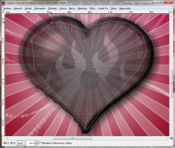
{kind=link}
Zůstane nám tedy označen jen obrys srdce. Klepneme na Vybrat › Zvětšit, nastavíme 2px. Klepneme na vrstvu „pozadi 1“ a stiskneme klávesu Delete – srdce zčervená. Klepneme na Vybrat › Nic a máme hotovo :)
{kind=link}
stáhni si Výsledek [inline:wallpaper_heart.xcf]
Kategorie:
Web je již ukončen. Nebude zde přibývat žádný nový obsah. Případné dotazy prosím na l.bacovsky(a)outlook.cz
Comments
srdce
RE: srdce
Je to strašně krásné, děkuji
Moc hezký :-)))
aha... a to mam nekam dat?
Brushe ve výchozím nastavení
ok dík :)
zklamání
Co konkrétně Vám nejde? Mohu
Kdyztak ja naprostej amater
Prosim Vas nechapem tomuto
Musíš prostě dostat výsledek
Re: Tapeta se srdíčkem
Re: Tapeta se srdíčkem
Re: Tapeta se srdíčkem
Re: Tapeta se srdíčkem
Re: Tapeta se srdíčkem
Re: Tapeta se srdíčkem
Re: Tapeta se srdíčkem
Re: Tapeta se srdíčkem
Re: Tapeta se srdíčkem
Re: Tapeta se srdíčkem
Add new comment